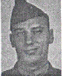

Pfc John H Cotter: Departed the USA with Company C. Killed in action on Iwo Jima February 19, 1945. At the time of his death he a fire team leader in the First Platoon. Gerald Casey, also a member of the First Platoon, and John's boyhood friend and next door neighbor was KIA February 21, 1945
Created by Rowland Lewis
Last Modified 07/19/99